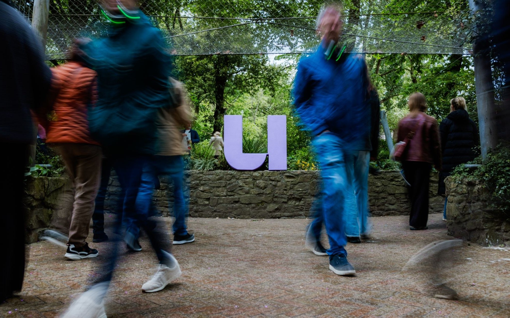
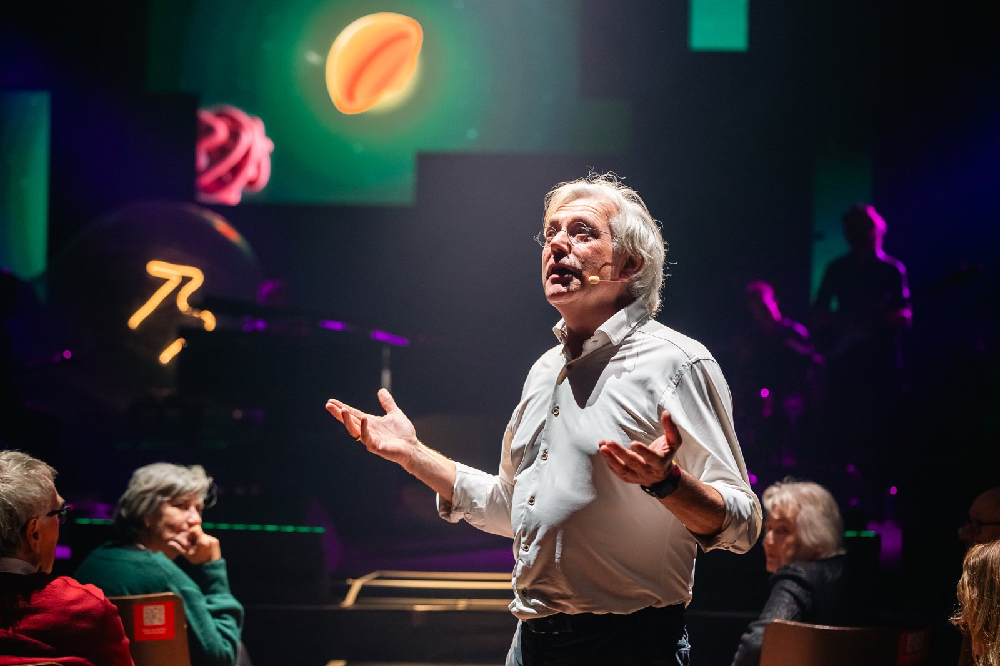

0
Interview-videopodcasts
5 UA
5 UH
5 UG
5 VUB
5 KUL
Seizoen 9 · 1 sep 2025 – 6 jun 2026
Impactcijfers van seizoen 9 — met UAntwerpen, UHasselt, UGent, VUB en KU Leuven.

Som van de vier formats hiernaast: 25 + 25 + 17 + 23.
→ Totaalcijfers licht gestegen tegenover seizoen 8
→ Verschuiving van YouTube naar podcastplatformen + Instagram
Onvolledige cijfers · periode 1/9/25 – 6/6/26.
Dagelijks op Instagram, Facebook, TikTok, YouTube Shorts, Nieuwsblad en Gazet van Antwerpen.
Zelfde periode vorig jaar: 1,2 miljoen — nu ruim 5× zoveel.
Onvolledig — de cijfers van Nieuwsblad en Gazet van Antwerpen ontbreken.



Universiteit voor iedereen
universiteitvanvlaanderen.be →